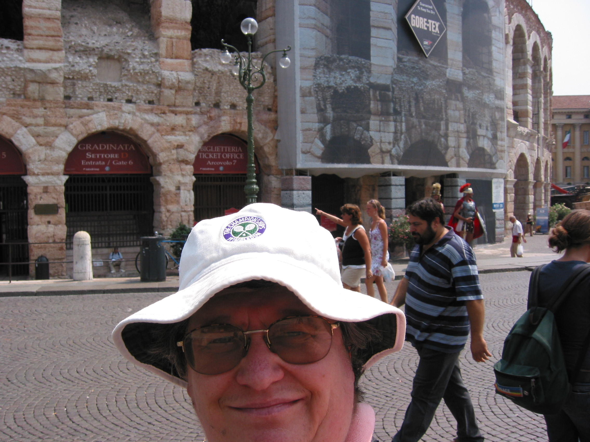
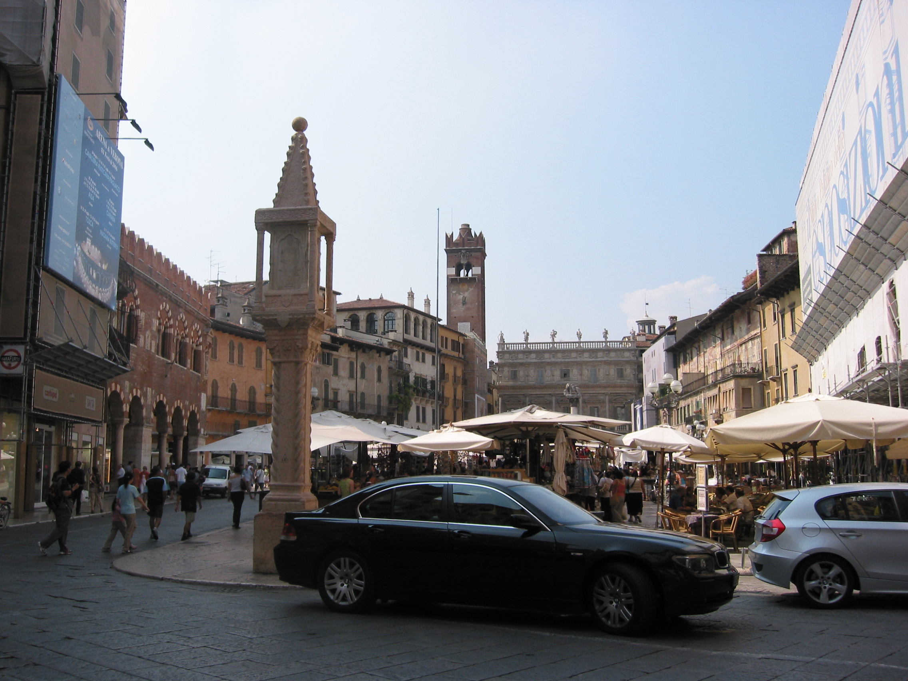
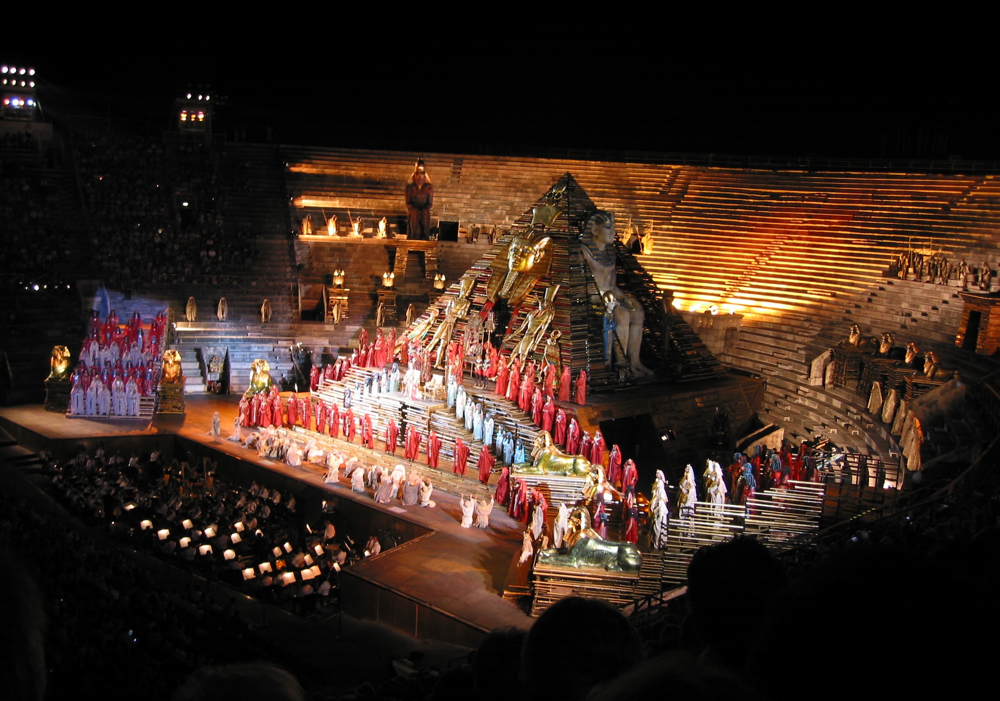

Verona 2006
 In July 2006, Mum and Dad paid for me to go on holiday with Page & Moy to Verona. I'd been wanting to go to the Verona Opera Festival for ages, but in 2006 there was a new production of Tosca, so I arranged with them I'd go. The beauty of this long weekend trip was that a Page & Moy rep travelled out and back with us, and handled the purchase of the opera tickets, but apart from that, it was a completly free format trip.{kind=link}
We flew out from Gatwick to Verona Villafranca Airport, also known as Valerio Catullo Airport, which is the airport closest to Lake Garda. After a short bus drive to Verona, dropping off some of our fellow travellers at a hotel on the outskirts, we arrived at Hotel Accademia. It is located bang in the city centre on Via Scala, which was supposed to be pedestrianised, but seemed to be as busy as any of the narrow city centre roads. It is a short walk from Piazza Bra, the largest piazza in Verona, Italy, with some claims that it is the largest in Italy. It is lined with numerous cafes and restaurants, and contains The Verona Arena, Verona's town hall - the Palazzo Barbieri, the Palazzo della Gran Guardia, and the Fontana delle Alpi gardens.
On each morning and afternoon I went off sightseeing in Verona on what was a very warm weekend. I was glad of my Wimbledon hat. There is lots of stuff to see, especially bridges. The Ponte di Castel Vecchio is a fortified bridge over the Adige River. The segmental arch bridge featured the world's largest span at the time of its construction, around 1355. It was totally destroyed by the retreating German troops on April 24, 1945 with the exception of the left tower. The Ponte di Pietra is a Roman arch bridge completed in 100BC. Four arches of the bridge were blown up by the retreating German troops, but rebuilt in 1957 with original materials. From it you get views of Castel San Pietro and the Chiesa di Santo Stefano, a Paleo-Christian, Roman Catholic basilica church. The Ponte della Vittoria owes its name to the victory of Vittorio Veneto, a battle that led to the defeat of the Austro-Hungarian Empire in the First World War. A much more modern bridge is the Ponte Garibaldi, which is overlooked by the Roman Catholic church, San Giorgio in Braida.
 The Piazza delle Erbe or Market's Square was the town's forum during the time of the Roman Empire. The northern side of the square is occupied by the ancient town hall, the Torre dei Lamberti, the Casa dei Giudici ("Judges' Hall") and the frescoed Mazzanti Houses. The western side, the shortest one, features the Baroque Palazzo Maffei, decorated by statues of Greek gods, outside of which is a white marble column, on which is St. Mark's Lion. Within walking distance is Verona Cathedral, dedicated to the Blessed Virgin Mary under the designation Santa Maria Matricolare. The Basilica di Santa Anastasia is a Gothic style church of the Dominican Order. Juliet's Balcony at the Casa di Giulietta was a little underwhelming to tell you the truth. You go down a lttle allwyway into a square and there is a small unassuming stone balcony.
{kind=link}
The Arena is the third largest Roman amphitheatre after the Colosseum and the arena of Capua. It suffered serious damage in the earthquake of 1117 in which the outer ring of the wall collapsed, leaving four rows of isolated arches, the so - called Ala or Wing of the Arena. You can have your photo taken with a gladiator but it costs a tidy sum. The square by the Town Hall is used to store scenery as the opera changes each night. It was a lttle odd to see the statue of Ramases and a giant arm from Aida parked next to the gypsy caravans from Carmen. There were also multiple Sphinxes.
 Our first opera was Carmen . We had Gradinata seats which meant we were allocated to a particular sector of the stone seats. The doors opened at about 7pm-ish. You made your way up the steps to your sector, collecting a candle on the way, and found yourself a spot to sit. I had brought my own inflatable cushion, so didn't need to pay to rent a cushion, but did buy a libretto. Then it was a two hour wait for the show to start at 9pm. A lot of the locals had come with picnics, and the people watching opportunities were great so the time flew by. Watching the great and the good take up their posh seats was also part of the entertainment. Before each opera, you had to light your candle.
{kind=link}
There were three distinct audience for the three different operas. Carmen had a lot of opera afficianados and wasn't full. Tosca was only on a few nights, was a new production and was absolutely full every night with a lot of locals, who shushed everyone who gasped at the fabulous scenery if it meant they couldn't hear the singing. Aida, which is sung every year, was also full but with a lot of people who had been bussed down from Lake Garda on an excursion. Talking to some of them, they had no idea the show wouldn't finish until 1am, which left them with the prospect of not getting back to their hotels until 3 in the morning.
Selfie outside Arena